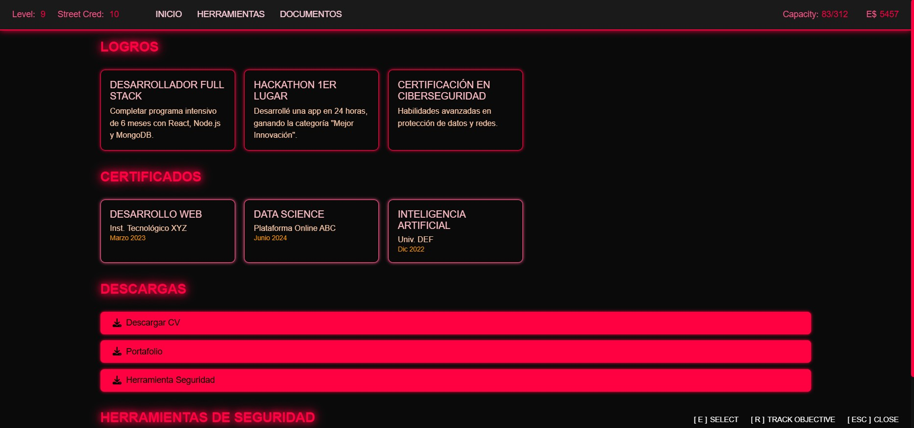
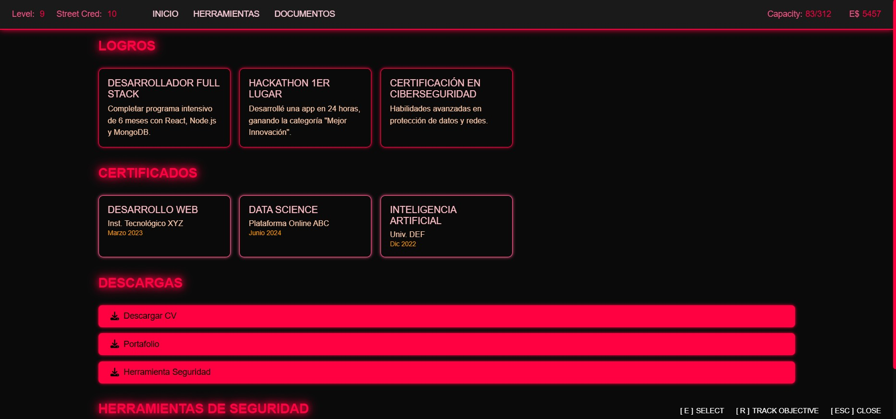

Navega a través de los fragmentos de código y diseño recuperados. La Red es vasta, la información espera. Cuidado con el Black ICE.
Simulación neural avanzada para análisis predictivo de flujos de datos en la Red. Implementa algoritmos de cifrado cuántico y evasión de ICE.
Curso introductorio completo a HTML, CSS, & JavaScript por IBM. Fundamentos esenciales para desarrollo web moderno.
Emitido: IBM // Fecha: 05/03/2025
Verificar Credencial [Ext]
Capacitación en IA Generativa aplicada al desarrollo de software para optimización y automatización de procesos.
Emitido: IBM // Fecha: 10/04/2025
Curso intensivo sobre control de versiones con Git y GitHub. Best practices para colaboración eficiente en proyectos.
Emitido: IBM // Fecha: 15/04/2025
Curso especializado en fundamentos de ciberseguridad. Estrategias y herramientas para protección de datos digitales.
Emitido: Google // Fecha: 28/03/2025
 
